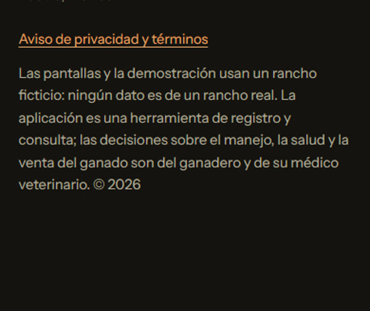

Material para revisión · ronda 2
Fehu · control ganadero. Página interna, fuera del sitio público. Todos los datos de la demo y de los videos son de un rancho inventado.
Las ligas
- Página de venta: https://rl7103405-gif.github.io/control-ganadero/
- Demo de la app, sin contraseña: https://rl7103405-gif.github.io/control-ganadero/demo/
- Aviso de privacidad: https://rl7103405-gif.github.io/control-ganadero/privacidad.html
- Tráiler · corte de Facebook: https://rl7103405-gif.github.io/control-ganadero/revision/trailer-facebook.mp4
- Tráiler · corte de Reels: https://rl7103405-gif.github.io/control-ganadero/revision/trailer-reels.mp4
- Tráiler · corte de estado de WhatsApp: https://rl7103405-gif.github.io/control-ganadero/revision/trailer-whatsapp.mp4
- Video demo con la voz de Roberto: https://rl7103405-gif.github.io/control-ganadero/revision/demo-con-voz.mp4
Tráiler · corte de Facebook
Vertical 1080×1920, 25 s. Hoja de contactos: un cuadro cada segundo, de izquierda a derecha y renglón por renglón.

Tráiler · corte de Reels
Vertical 1080×1920, 16 s. Hoja de contactos: un cuadro cada segundo, de izquierda a derecha y renglón por renglón.

Tráiler · corte de estado de WhatsApp
Vertical 1080×1920, 12 s. Hoja de contactos: un cuadro cada segundo, de izquierda a derecha y renglón por renglón.

Video demo con la voz de Roberto
Vertical 1080×1920, 1 min 16 s. Recorrido de la app narrado. Hoja de contactos: un cuadro cada 4 segundos, de izquierda a derecha y renglón por renglón.

La página de venta en celular (390 px), de arriba abajo



La página de venta en escritorio (1440 px), de arriba abajo